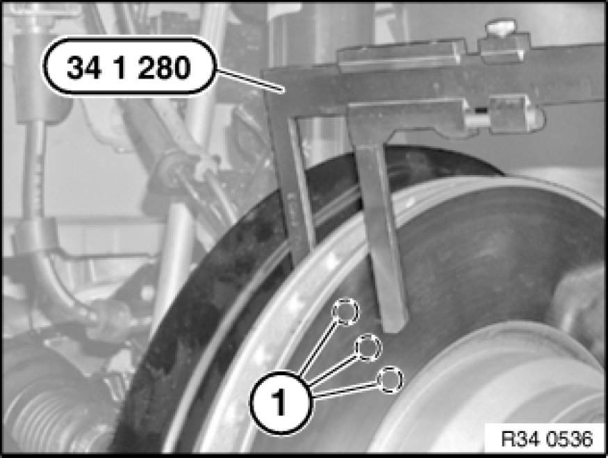

Removing and Installing/Replacing Both Front Brake Discs
34 11 220 - Removing and installing or replacing both front brake discs

Special tools required:
- 34 1 280 34 1 280 Sliding Caliper

Necessary preliminary tasks:
- Remove wheels Removing or Installing Front or Rear Wheel
- Remove brake pads Removing and Installing/Replacing Brake Pads of Both Front Disc Brakes
After completing work, read and comply with notes on braking in new brake discs / brake pads Procedures.

Check minimum brake disc thickness:
- Position special tool 34 1 280 34 1 280 Sliding Caliper at three measuring points in area (1) and measure.
- Compare measurement result and lowest value with setpoint value [1][2]34 11 Front Brake.
If the brake discs are replaced, you must also fit new brake pads.
Brake discs may only be replaced in pairs (on each axle).

Important!
New brake pads may only be installed if the brake disc thickness is greater than or equal to the minimum brake disc thickness [1][2]34 11 Front Brake (MIN TH) (not incl. M vehicles).
In the case of M vehicles and perforated brake discs, new brake pads may only be installed if the brake disc thickness is greater than the minimum brake disc thickness [1][2]34 11 Front Brake (MIN TH).
Note:
The minimum brake disc thickness is configured in such a way that it lasts the life of a further set of brake pads (does not apply to M vehicles and perforated brake discs).
Important!
To release brake disc: Do not under any circumstances strike friction ring with a hammer or similar!
If necessary, carefully tap on base of brake disc chamber with a rubber mallet.
Clean contact surface of brake disc at wheel hub thoroughly and remove traces of corrosion.
Unevenness on contact surface may result in distortion of brake disc!
Release screw (1) and remove brake disc (2).
Installation:
Thoroughly clean contact surface of wheel hub and remove traces of corrosion if necessary.
Replace screw.
Tightening torque 34 11 1AZ 34 11 Front Brake.
Important!
Internally ventilated brake discs are balanced.
Never remove or reposition balance clips.